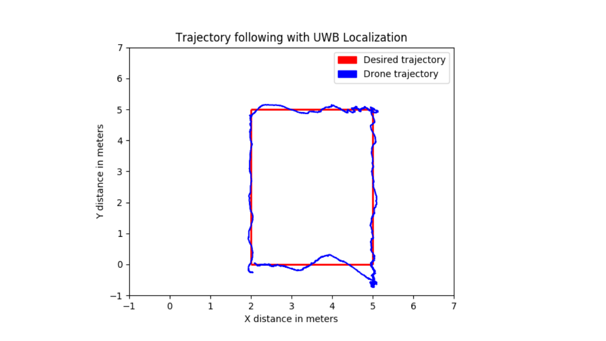
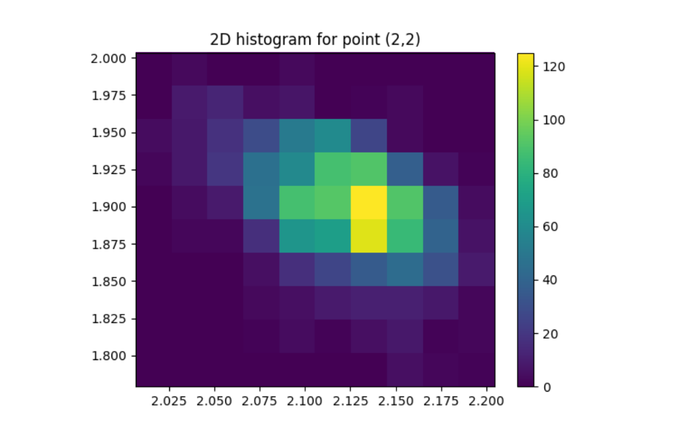

Localisation using UWB beacon module DW1000
The DW1000 is the world's first single-chip wireless transceiver based on Ultra Wideband techniques. This chip enables you to develop cost-effective RTLS solutions with precise indoor and outdoor positioning to within 10 cm.
The task was an attempt to precisely localise a moving drone to aid its navigation in GPS denied environments. Indian Institute of science is a place with thick canopy there we often encounter erreneous GPS data which is not reliable for drone navigation experiments
Discovering and developing the evaluation board for the DW1000 chip
Initially started by interfacing the DW1000 chip with various arduino boards, RPis ,Odroid XU4 etc. Finally settled on using STM32 as the formfactor and sampling rate of this microcontroller was ideal. There was a readily available library which helped me to start off with basic 2D ranging experiments and characterise the DW1000 module.
DW1000 (Arduino-pro-mini)
DW1000 (STM-32)
Interfacing the beacon with the Drone
Attempt to understand the DW1000 chip's behavior
1.With the DW1000 we were able to precisely Localization upto 10 cm accuracy and 300m effective range with 45hz update rate.
2.High data rates (6.8Mbps) for communication + ranging application
Fig:Experiment setup

Fig:Localization results when tested with a Drone.

Fig:Histogram plot showing the data recorded at the point 2,2 (ground truth) for 500 samples.